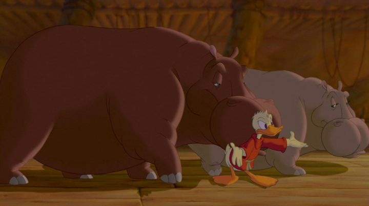

Imagine the time when "Fantasia 2000" came out in theaters, a time when I was alive and old enough for my parents to take me. Everyone already knew and loved the original 1940's "Fantasia." It was lesser-known at the time that there were failed plans to produce more movies like it. For there to be a brand new sequel, with new shorts, was tremendously exciting. And if there was ever a time for a sequel, surely the dawn of a new millenium was it. My family went to an IMAX theater to see it, at a time when IMAX was almost exclusively used for nature documentaries and not Hollywood productions. We even got a free collectible concert-program booklet to enhance the experience! While most of the DNA of the original "Fantasia" is still here, and the legacy of the original clearly celebrated in the opening credits, there's also a stronger hint of commercialism, a sign of what the Disney company was becoming. Between the new shorts are a more flashy, glossy production, with CGI curved walls behind the well-lit orchestra. A series of L.A. celebrities introduce each segment, including Steven Martin, James Earl Jones, Angela Lansbury, and Penn & Teller. Naturally, these introductions are funnier than the dry humor of Deems Taylor from the original, but it also waters down the quality. "Fantasia 2000" feels like "Fantasia" for the masses. Which isn't to say it's bad. On the contrary, we're still getting a high quality anthology of experimental shorts. Nearly all of the shorts actually have a story of some sort this time, but the visual presentation varies dramatically. Most of the shorts are actually CGI, making this a great experimentation platform for Disney's artists (at the time, Pixar was the only real CGI studio in town). But there's enough love given to 2D shorts too, and even some hybrids, so we get a nice mixture. Generally, animation quality is much more clean and modern, taking advantage of digital techniques to draw and color everything.There's a good number of shorts, even though the runtime is barely over an hour in total. "Rhapsody in Blue" is probaly the biggest standout, and remains a classic that people still talk about. "The Sorcerer's Apprentice" gets a repeat, with a clever transition of Mickey Mouse introducing a new Noah's Arc-inspired short featuring Donald Duck. The movie ends with "The Firebird," a beautiful and dramatic short that feels like a good equivalent to "Night on Bald Mountain." By coincidence, the shorts I listed are among the 2D ones; the CGI ones are all fine, but their stories tend to be more standard and didn't stand out as much, as beautiful as some of the concepts were. The original "Fantasia" was meant to be a recurring event. "Fantasia 2000" is a partial realization of that, but despite further attempts to repeat it, no other movies got off the ground (although a few new shorts were finished and released separately). And "2000" gives the impression that these would have been treated as "entertainment events," rather than "cultural or artistic events," which might have been against the original point. Even so, there's a lot to like about the work the artists put into the shorts in this one, which is what really counts. As long as they have a platform somewhere, I won't aruge.
- "Ani" More reviews can be found at : https://2danicritic.github.io/ Previous review: review_Fantasia Next review: review_Fate_-_Apocrypha